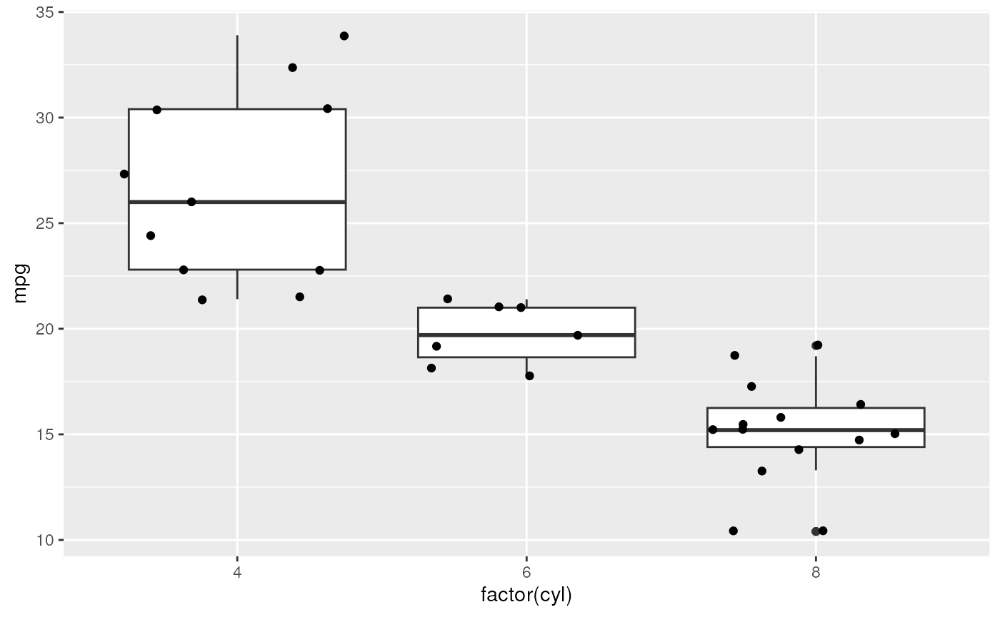

B. Using R to Understand Bioinformatic Results
Source:vignettes/b_course_part_1.Rmd
b_course_part_1.RmdThis workshop introduces R as an essential tool in
exploratory analysis of bioinformatic data. No previous experience with
R is required. We start with a very short introduction to
R, mentioning vectors, functions, and the
data.frame for representing tabular data. We explore some
essential data management tasks, for instance summarizing cell types and
plotting a ‘UMAP’ in a single-cell RNASeq experiment. We adopt the
‘tidy’ paradigm, using the dplyr package for
data management and ggplot2 for data
visualization. The workshop concludes with a short tour of approaches to
enhance reproducible research in our day-to-day work.
Introduction to R
Vectors
-
Common types of vectors include character, numeric, logical, … Can include
NAto indicate that the information is not available. -
Vectorized logical and subsetting
-
Using vectors can be very powerful, for instance to find the name of Brazillians does not require a
forloop or other iteration.name[is_brazillian] #> [1] "Benilton" -
According to Google, the average waist size in men is 102cm. Approximating the human shape as a cylinder, then the volume of Benilton and Martin is
waist_diameter_cm <- 102 ## d = 2 pi r, so r = d / (2 pi) radius_cm <- waist_diameter_cm / (2 * pi) ## V = pi r^2 h volume_cm3 <- pi * radius_cm^2 * height_cm volume_cm3 #> [1] NA 153165.9 We didn’t know Benilton’s height, so we can’t know his volume. Apparently, by these calculations, Martin has an expected volume in excess of 150 thousand cubic centimeters.
-
Functions
-
Key concept for organizing variables (columns) observed on samples (rows).
df <- data.frame( name = name, height = height_cm, volume = volume_cm3, is_brazillian = is_brazillian ) df #> name height volume is_brazillian #> 1 Benilton NA NA TRUE #> 2 Martin 185 153165.9 FALSE Typically,
data.frameis the result of reading data from a file, e.g.,read.csv().
‘tidy’ analysis
This section makes use of dplyr, readr, ggplot2, and plotly; make sure these are installed
pkgs <- c("dplyr", "readr", "ggplot2", "plotly")
need <- pkgs[!pkgs %in% rownames(installed.packages())]
if (length(need))
install.packages(need, repos = "https://cran.r-project.org")Tidy analysis and visualization
Why do I like ‘tidy’ analysis?
- A single representation – the ‘tibble’ (aka ‘data.frame’) – covers many typical data analysis tasks, and provides a format to shoot for when tempted by more complicated data structures
- A few ‘verbs’ with consistent signatures help circumscribe the data transformations available.
- The ‘pipe’ operator
|>helps structure transformations into an easy-to-understand order.
library(dplyr)
#>
#> Attaching package: 'dplyr'
#> The following objects are masked from 'package:stats':
#>
#> filter, lag
#> The following objects are masked from 'package:base':
#>
#> intersect, setdiff, setequal, union
## a familiar built-in dataset, represented as a `tibble()`...
mtcars_tbl <-
mtcars |>
as_tibble(rownames = "model")
mtcars_tbl
#> # A tibble: 32 × 12
#> model mpg cyl disp hp drat wt qsec vs am gear carb
#> <chr> <dbl> <dbl> <dbl> <dbl> <dbl> <dbl> <dbl> <dbl> <dbl> <dbl> <dbl>
#> 1 Mazda RX4 21 6 160 110 3.9 2.62 16.5 0 1 4 4
#> 2 Mazda RX4 … 21 6 160 110 3.9 2.88 17.0 0 1 4 4
#> 3 Datsun 710 22.8 4 108 93 3.85 2.32 18.6 1 1 4 1
#> 4 Hornet 4 D… 21.4 6 258 110 3.08 3.22 19.4 1 0 3 1
#> 5 Hornet Spo… 18.7 8 360 175 3.15 3.44 17.0 0 0 3 2
#> 6 Valiant 18.1 6 225 105 2.76 3.46 20.2 1 0 3 1
#> 7 Duster 360 14.3 8 360 245 3.21 3.57 15.8 0 0 3 4
#> 8 Merc 240D 24.4 4 147. 62 3.69 3.19 20 1 0 4 2
#> 9 Merc 230 22.8 4 141. 95 3.92 3.15 22.9 1 0 4 2
#> 10 Merc 280 19.2 6 168. 123 3.92 3.44 18.3 1 0 4 4
#> # ℹ 22 more rowsThe dplyr package is at the center of ‘tidy’ analysis
-
tibble()– representation of adata.frame, with better display of long and wide data frames.tribble()constructs a tibble in a way that makes the relationship between data across rows more transparent. -
glimpse()– providing a quick look into the columns and data in the tibble by transposing the tibble and display each ‘column’ on a single line. -
select()– column selection. -
filter(),slice()– row selection. -
pull()– extract a single column as a vector. -
mutate()– column transformation. -
count()– count occurences in one or more columns. -
arrange()– order rows by values in one or more columns. -
distinct()– reduce a tibble to only unique rows. -
group_by()– perform computations on groups defined by one or several columns. -
summarize()– calculate summary statstics for groups. -
left_join(),right_join(),inner_join()– merge two tibbles based on shared columns, preserving all rows in the first (left_join()) or second (right_join()) or both (inner_join()) tibble.
## count # of cars with 4, 6, ... cylinders
mtcars_tbl |>
count(cyl)
#> # A tibble: 3 × 2
#> cyl n
#> <dbl> <int>
#> 1 4 11
#> 2 6 7
#> 3 8 14
## select specific columns and filter rows based on 'cyl' and 'mpg'
mtcars_tbl |>
select(model, mpg, cyl, disp) |>
filter(
cyl >= 8,
mpg > 15
)
#> # A tibble: 8 × 4
#> model mpg cyl disp
#> <chr> <dbl> <dbl> <dbl>
#> 1 Hornet Sportabout 18.7 8 360
#> 2 Merc 450SE 16.4 8 276.
#> 3 Merc 450SL 17.3 8 276.
#> 4 Merc 450SLC 15.2 8 276.
#> 5 Dodge Challenger 15.5 8 318
#> 6 AMC Javelin 15.2 8 304
#> 7 Pontiac Firebird 19.2 8 400
#> 8 Ford Pantera L 15.8 8 351Visualization
- A key to communicating results
- ggplot2 provides a ‘grammar of graphics’ to produce high-quality graphics.
library(ggplot2)
plt <-
ggplot(mtcars_tbl) +
aes(x = factor(cyl), y = mpg) +
geom_boxplot() +
geom_jitter()
plt
- plotly provides interactivity (e.g., ‘mouse over’ a point to see the details of the point), which can be very useful when trying to communicate results in an exploratory manner.
library(plotly)
plt <-
ggplot(mtcars_tbl) +
aes(x = factor(cyl), y = mpg, text = model) +
geom_jitter(width = .25) +
geom_boxplot()
ggplotly(plt)Case study: single-cell UMAP
Load a ‘csv’ (comma-separated value) file prepared with the a ‘UMAP’.
## use `file.choose()` or similar for your own data sets
umap_csv_file <- system.file(package= "XM2023", "extdata", "umap.csv")
umap_data <- readr::read_csv(umap_csv_file)
umap_dataReproducibility
Packages
-
Provide a robust way to document requirements for analysis, and to organize complicated analyses into distinct steps.
devtools::create("MyAnalysis") setwd("MyAnalysis") usethis::use_vignette("a_data_management", "A. Data management") usethis::use_vignette("b_exploratory_visualization", "B. Exploration") -
I’ve found pkgdown to be very useful for presenting packages to my users. For instance, material from this workshop is available through pkgdown.
usethis::use_pkgdown() pkgdown::build_site()
Vignettes
- Explict description of analysis steps (good for the bioinformatician), coupled with text and graphics (good for the collaboration).
Git
- Incremental ‘commits’ as analysis progresses.
- Commits allow confident exploration – the last commit is always available to ‘start over’.
- Tags allow checkpointing an analysis, e.g., the version of the analysis used in the original manuscript submission; the version of the analysis associated with the revision and final publciation.
Containers
- A fully reproducible analysis is very challenging to implement – specifying software version is not enough, and is not easy for a future investigator to re-establish.
- Containers like docker or singularity provide one mechanism for creating a ‘snapshot’ capturing exactly the software used.
- Beware! Complicated containers might result in a fully reproducible analysis, but provide little confidence in the robustness of the analysis.
Session information
This document was produced with the following R software:
sessionInfo()
#> R version 4.3.0 (2023-04-21)
#> Platform: x86_64-pc-linux-gnu (64-bit)
#> Running under: Ubuntu 22.04.2 LTS
#>
#> Matrix products: default
#> BLAS: /usr/lib/x86_64-linux-gnu/openblas-pthread/libblas.so.3
#> LAPACK: /usr/lib/x86_64-linux-gnu/openblas-pthread/libopenblasp-r0.3.20.so; LAPACK version 3.10.0
#>
#> locale:
#> [1] LC_CTYPE=en_US.UTF-8 LC_NUMERIC=C
#> [3] LC_TIME=en_US.UTF-8 LC_COLLATE=en_US.UTF-8
#> [5] LC_MONETARY=en_US.UTF-8 LC_MESSAGES=en_US.UTF-8
#> [7] LC_PAPER=en_US.UTF-8 LC_NAME=C
#> [9] LC_ADDRESS=C LC_TELEPHONE=C
#> [11] LC_MEASUREMENT=en_US.UTF-8 LC_IDENTIFICATION=C
#>
#> time zone: Etc/UTC
#> tzcode source: system (glibc)
#>
#> attached base packages:
#> [1] stats graphics grDevices utils datasets methods base
#>
#> other attached packages:
#> [1] plotly_4.10.2 ggplot2_3.4.2 dplyr_1.1.2
#>
#> loaded via a namespace (and not attached):
#> [1] tidyr_1.3.0 sass_0.4.6 utf8_1.2.3 generics_0.1.3
#> [5] stringi_1.7.12 digest_0.6.31 magrittr_2.0.3 evaluate_0.21
#> [9] grid_4.3.0 fastmap_1.1.1 rprojroot_2.0.3 jsonlite_1.8.5
#> [13] httr_1.4.6 purrr_1.0.1 fansi_1.0.4 crosstalk_1.2.0
#> [17] viridisLite_0.4.2 scales_1.2.1 lazyeval_0.2.2 textshaping_0.3.6
#> [21] jquerylib_0.1.4 cli_3.6.1 rlang_1.1.1 ellipsis_0.3.2
#> [25] munsell_0.5.0 withr_2.5.0 cachem_1.0.8 yaml_2.3.7
#> [29] tools_4.3.0 memoise_2.0.1 colorspace_2.1-0 vctrs_0.6.2
#> [33] R6_2.5.1 lifecycle_1.0.3 stringr_1.5.0 fs_1.6.2
#> [37] htmlwidgets_1.6.2 ragg_1.2.5 pkgconfig_2.0.3 desc_1.4.2
#> [41] pkgdown_2.0.7 pillar_1.9.0 bslib_0.4.2 gtable_0.3.3
#> [45] glue_1.6.2 data.table_1.14.8 systemfonts_1.0.4 xfun_0.39
#> [49] tibble_3.2.1 tidyselect_1.2.0 highr_0.10 knitr_1.43
#> [53] farver_2.1.1 htmltools_0.5.5 rmarkdown_2.22 labeling_0.4.2
#> [57] compiler_4.3.0